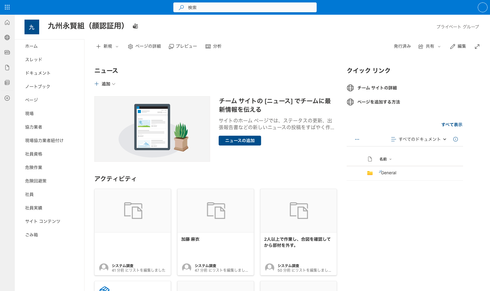
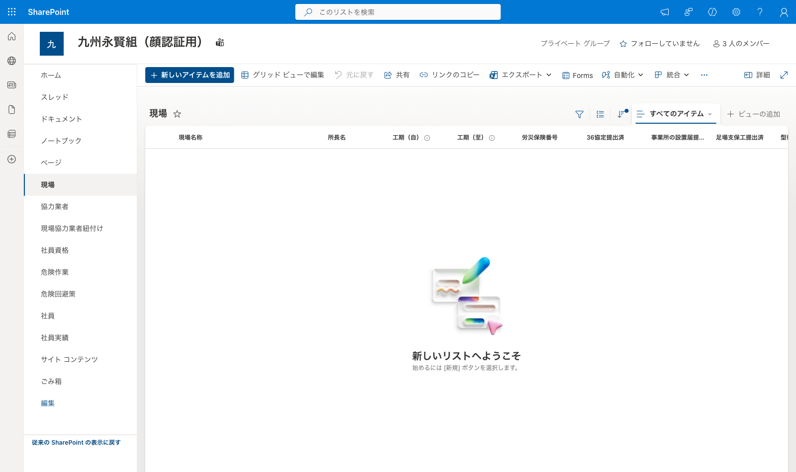
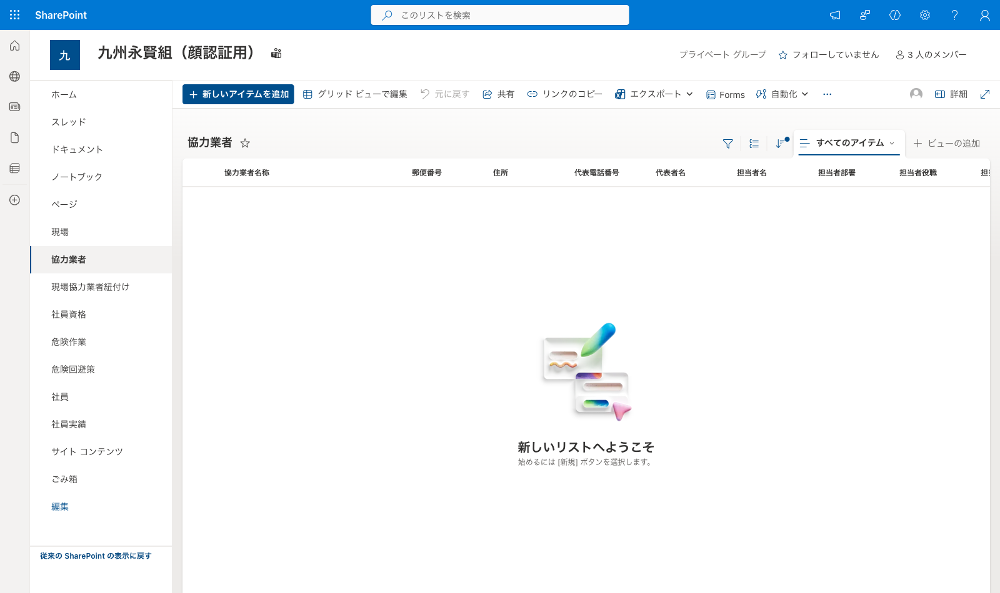
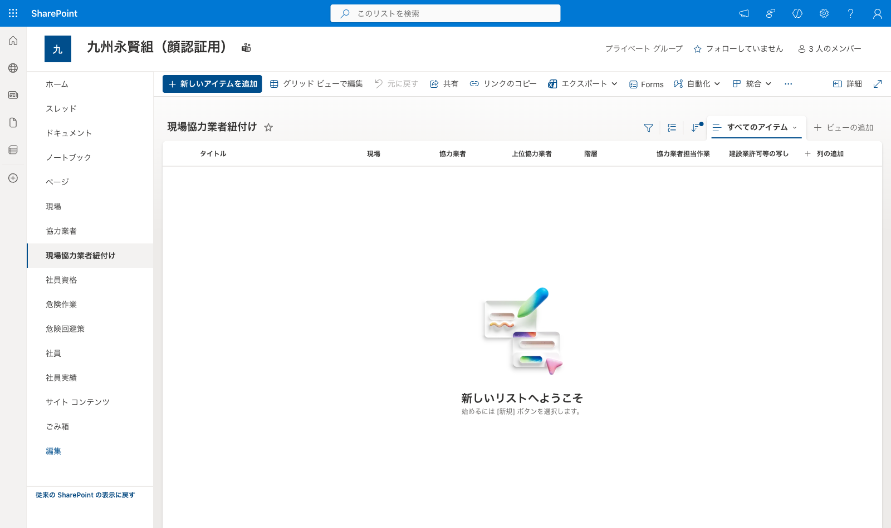
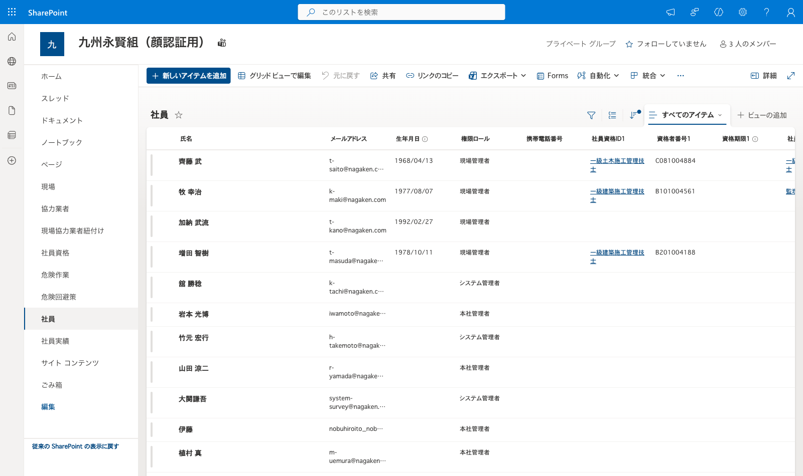
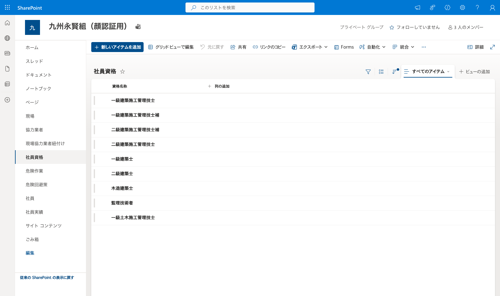
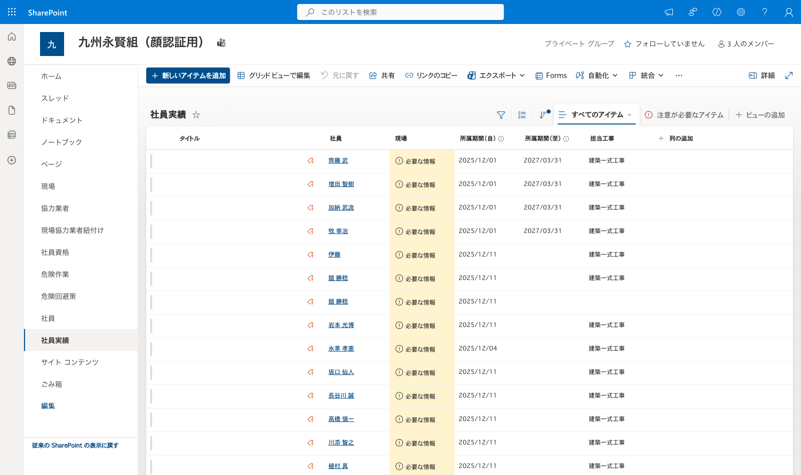
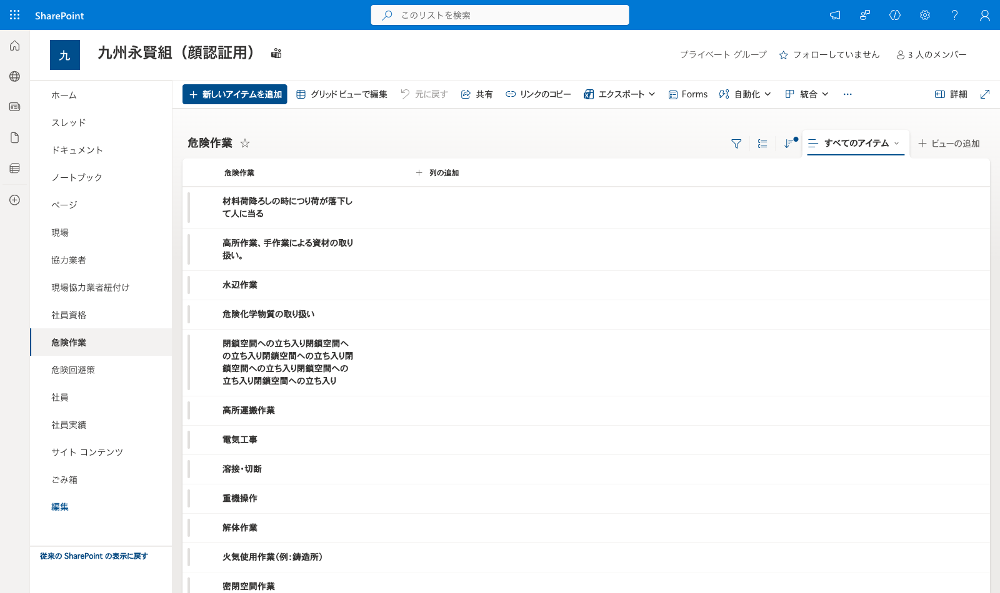
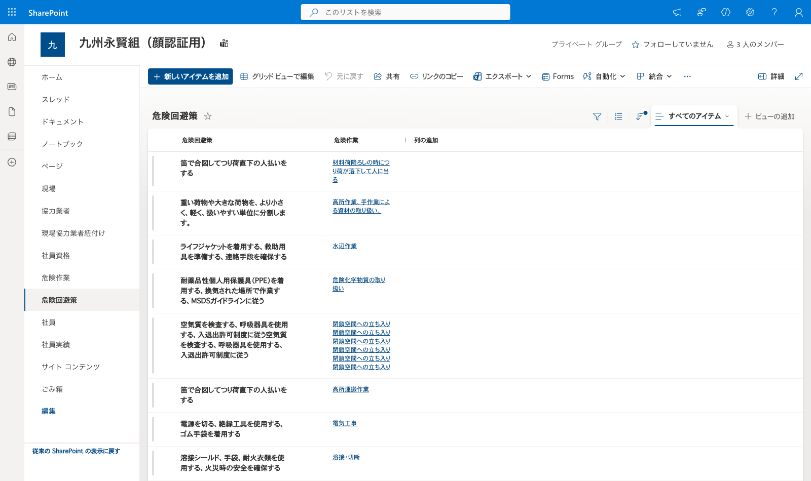

🎯 このステップのゴール
Step3で作成したテナント専用SPOサイトに、運用に必要な8種類のSharePointリストを作成します。リストの列定義は永賢組サイト（constructioninfo）と完全一致させる必要があります。
永賢組サイト(constructioninfo)の各リストで「リスト設定 → Excelにエクスポート」または SharePoint の ExportToCSV 機能を使うと、CSV の先頭に ListSchema={...} という行が含まれます。ここに 全フィールドの完全な SchemaXml が JSON で埋め込まれているので、これをそのまま PnP.PowerShell の Add-PnPFieldFromXml に渡すと IMEMode / Indexed / EnforceUniqueValues / Min・Max / Lookup参照先 など細かい属性まで完全再現できます。
この方法で九州永賢組の `現場` リスト作成時に「36協定提出済 (_x0033_6AgreementSubmission)」の数字先頭エンコードや「労災保険番号 Min=Max=14」等の細部まで正確に復元できました。
Add-PnPFieldFromXml でリストに列を追加しても、「すべてのアイテム」ビューには自動では表示されません。列はリスト内部には存在していますがUIで見えない状態になります。
リスト作成後、必ず以下のコマンドでビューに列を追加してください（Add-PnPViewField cmdlet は PnP.PowerShell 3.x では存在しないので注意）:
$view = Get-PnPView -List "現場" | Where-Object { $_.DefaultView -eq $true }
Set-PnPView -List "現場" -Identity $view.Id -Fields @(
"LinkTitle","ChiefName","ConstructionStartDate","ConstructionEndDate",
"InsuranceNumber","_x0033_6AgreementSubmission",
"OfficeEstablishmentSubmission","ScaffoldingSubmission",
"FalseworkSubmission","Abbreviation"
)※ Set-PnPView -Fields は既存ビューの列リストを全置換します。Title 相当は LinkTitle を指定。
8リストを1コマンドで一括作成するPowerShellスクリプトを用意しています。永賢組サイト(constructioninfo)からMicrosoft Graph APIで取得した実装ベースの正確な列定義を埋め込み済み。Lookup列・選択肢・必須フラグもすべて自動設定されます。
⬇️ サイトテンプレートDL（provision-gembaai-lists.ps1）
▶ 実行方法（クリックして展開）
- PowerShell 7+ をインストール
- PnP.PowerShell モジュールをインストール:
Install-Module -Name PnP.PowerShell -Scope CurrentUser -Force - 新規テナント用のSPOサイトを Step3 で先に作成しておく
- スクリプトを実行（対話ログイン）:
pwsh -File ./provision-gembaai-lists.ps1 -SiteUrl "https://nagaken.sharepoint.com/sites/constructioninfoXxxx" - 初回はEntra IDの認証画面が開く。サイトの所有者(フルコントロール)権限を持つアカウントでログイン
- 8リストの作成完了まで約30秒〜1分
※ スクリプトは冪等（idempotent）です。既存リストはスキップされるため、再実行しても安全。
手動で作成する場合は、本ページの全項目表を参照してください（同じ実装ベースの正確な定義です）。
🖼 完成イメージ
九州永賢組（顔認証用）テナントで実際にこのワークフローを実行した結果、左ナビに8リストが並びます:

📋 作成するリスト一覧
| # | 表示名 | 物理リスト名 | 主な用途 |
|---|---|---|---|
| 1 | 現場 | OnsiteMaster | 現場マスタ |
| 2 | 協力業者 | PartnerMaster | 協力業者マスタ |
| 3 | 現場協力業者紐付け | OnsitePartnerRelation | 施工体制ツリー（自己参照） |
| 4 | 社員 | EmployeeMaster | テナント社員 |
| 5 | 社員資格 | EmployeeQualificationMaster | 社員資格マスタ |
| 6 | 社員実績 | EmployeeAchievement | 社員の現場履歴 |
| 7 | 危険作業 | RiskyWorkMaster | KY活動の危険作業マスタ |
| 8 | 危険回避策 | RiskAvoidanceMaster | 危険作業に紐づく回避策 |
アプリ側（face.gemba-ai.cloud）は物理列名（内部名）でデータを読み書きします。日本語表示名は変更可ですが、内部名は永賢組と完全一致させてください。
1️⃣ 現場（OnsiteMaster）
現場の基本情報を管理するマスタ。

| 表示名 | 内部名 | 型 | 必須 | 備考 |
|---|---|---|---|---|
| 現場名称 | Title | 1行テキスト(255) | ✓ | EnforceUniqueValues=TRUE / Indexed=TRUE |
| 所長名 | ChiefName | 1行テキスト(255) | ||
| 工期（自） | ConstructionStartDate | 日付（dateOnly） | ||
| 工期（至） | ConstructionEndDate | 日付（dateOnly） | ||
| 労災保険番号 | InsuranceNumber | 数値（14桁固定） | min=max=14 | |
| 36協定提出済 | _x0033_6AgreementSubmission | はい/いいえ | ※内部名は SharePoint の数値先頭エンコード（36→_x0033_6） | |
| 事業所の設置届提出済 | OfficeEstablishmentSubmission | はい/いいえ | ||
| 足場支保工提出済 | ScaffoldingSubmission | はい/いいえ | ||
| 型枠支保工提出済 | FalseworkSubmission | はい/いいえ | ||
| 略称ローマ字 | Abbreviation | 1行テキスト(255) | 例: SASASHIMA |
※ 監査列（ID/Created/Modified/Author/Editor）はSharePointが自動で持つので明示作成不要
2️⃣ 協力業者（PartnerMaster）
協力業者の会社情報・許可情報・保険加入情報を管理するマスタ。

| 表示名 | 内部名 | 型 | 必須 | 選択肢 |
|---|---|---|---|---|
| 協力業者名称 | Title | 1行テキスト(255) | ✓ | |
| 郵便番号 | PostCode | 1行テキスト(255) | ||
| 住所 | Address | 1行テキスト(255) | ||
| 代表電話番号 | MainPhoneNumber | 1行テキスト(255) | ||
| 代表者名 | RepresentativeName | 1行テキスト(255) | ||
| 担当者名 | PersonInChargeName | 1行テキスト(255) | ||
| 担当者部署 | DepartmentInCharge | 1行テキスト(255) | ||
| 担当者役職 | PersonInChargePosition | 1行テキスト(255) | ||
| 担当者携帯番号 | PersonInChargeMobileNumber | 1行テキスト(255) | ||
| 担当者メールアドレス | PersonInChargeEmailAddress | 1行テキスト(255) | ||
| 建設業許可番号 | ConstructionLicenseNumber | 1行テキスト(255) | ||
| 建設業許可業種 | ConstructionLicenseType | 選択肢（複数可・チェックボックス） | 29業種：土木一式工事 / 建築一式工事 / 大工工事 / 左官工事 / とび・土工・コンクリート工事 / 石工事 / 屋根工事 / 電気工事 / 管工事 / タイル・れんが・ブロック工事 / 鋼構造物工事 / 鉄筋工事 / 舗装工事 / しゅんせつ工事 / 板金工事 / ガラス工事 / 塗装工事 / 防水工事 / 内装仕上工事 / 機械器具設置工事 / 熱絶縁工事 / 電気通信工事 / 造園工事 / さく井工事 / 建具工事 / 水道施設工事 / 消防施設工事 / 清掃施設工事 / 解体工事 | |
| 契約形態 | ContractType | 選択肢（ラジオ） | 直契約 / 再下請 | |
| 初期紹介会社 | IntroductionCompany | 1行テキスト(255) | ||
| 健康保険 | HealthInsurance | 選択肢（ラジオ） | 健康保険組合 / 協会けんぽ / 建設国保 / 国民健康保険 | |
| 年金保険 | PensionInsurance | 選択肢（ラジオ） | 厚生年金 / 国民年金 | |
| 雇用保険 | EmploymentInsurance | 選択肢（ラジオ） | 加入 / 日雇保険 | |
| 建設業退職金共済制度 | KentaikyoSystem | 選択肢（ラジオ） | 有 / 無 | |
| 中小企業退職金共済制度 | SMBtaikyoSystem | 選択肢（ラジオ） | 有 / 無 |
3️⃣ 現場協力業者紐付け（OnsitePartnerRelation）
現場×協力業者の紐付け＋施工体制ツリー（自己参照で1次〜N次を表現）。

| 表示名 | 内部名 | 型 | 必須 | 備考 |
|---|---|---|---|---|
| タイトル | Title | 1行テキスト(255) | 任意ラベル | |
| 現場 | OnsiteID | Lookup → 現場(OnsiteMaster) | ✓ | columnName: Title |
| 協力業者 | PartnerID | Lookup → 協力業者(PartnerMaster) | ✓ | columnName: Title |
| 上位協力業者 | ParentOnsitePartnerID | Lookup → 自分自身(OnsitePartnerRelation) | 自己参照で施工体制ツリー | |
| 階層 | Hierarchy | 数値 | 1=1次請、2=2次請、… | |
| 協力業者担当作業 | PartnerWork | 選択肢 | 37工種（後述） |
PartnerWork の37工種
直接仮設工事 / 土工事 / 山留・乗入構台工事 / 杭地業工事 / コンクリート工事 / 型枠工事 / 鉄筋工事 / 鉄骨工事 / 組積工事 / 防水工事 / 石工事 / タイル工事 / 木工事 / 屋根工事 / 外壁工事 / 金属工事 / 左官工事 / 木製建具工事 / 金属製建具工事 / ガラス工事 / 塗装工事 / 内装工事 / 住設工事 / 家具工事 / 断熱・耐火被覆工事 / パーテーション工事 / サイン工事 / 外構工事 / 造園工事 / EV工事 / 電気設備工事 / 給排水設備工事 / 空調換気設備工事 / ガス設備工事 / 解体工事 / 雑工事 / その他設備工事
このリストは OnsiteMaster と PartnerMaster の作成後 に作成してください。Lookup列は参照先リストが先に存在する必要があります。
4️⃣ 社員（EmployeeMaster）
テナント社員の基本情報・権限・資格情報。資格は3スロット固定実装。

| 表示名 | 内部名 | 型 | 必須 | 選択肢/備考 |
|---|---|---|---|---|
| 氏名 | Title | 1行テキスト(255) | ✓ | |
| メールアドレス | MailAddress | 1行テキスト(255) | ||
| 生年月日 | BirthDate | 日付（dateOnly） | ||
| 権限ロール | Role | 選択肢 | 現場管理者 / 本社管理者 / システム管理者 | |
| 携帯電話番号 | MobileNumber | 1行テキスト(255) | ||
| 社員資格ID1 | QualificationID1 | Lookup → 社員資格 | ||
| 資格者番号1 | QualifiedPersonNumber1 | 1行テキスト(255) | ||
| 資格期限1 | QualificationDeadline1 | 日付（dateOnly） | ||
| 社員資格ID2 | QualificationID2 | Lookup → 社員資格 | ||
| 資格者番号2 | QualifiedPersonNumber2 | 1行テキスト(255) | ||
| 資格期限2 | QualificationDeadline2 | 日付（dateOnly） | ||
| 社員資格ID3 | QualificationID3 | Lookup → 社員資格 | ||
| 資格者番号3 | QualifiedPersonNumber3 | 1行テキスト(255) | ||
| 資格期限3 | QualificationDeadline3 | 日付（dateOnly） | ||
| 監理技術者番号 | ConstructionManagerNumber | 数値（11桁固定） | min=max=11 | |
| 更新期限 | ConstructionManagerDeadline | 日付（dateOnly） | 監理技術者の更新期限 | |
| CPD実績 | CPDAchievements | 複数行テキスト（plain・6行） | 継続的職能開発の記録 |
4個以上の資格を持つ社員は、主要な3つだけを入力します。設計上の制約です。CPD実績欄に補足記載することも可能。
5️⃣ 社員資格（EmployeeQualificationMaster）
社員資格名のマスタ（シンプルなマスタテーブル）。

| 表示名 | 内部名 | 型 | 必須 | 備考 |
|---|---|---|---|---|
| 資格名称 | Title | 1行テキスト(255) | ✓ | 例: 一級建築施工管理技士 |
永賢組での登録例：一級建築施工管理技士、一級建築施工管理技士補、二級建築施工管理技士、二級建築施工管理技士補、一級建築士、二級建築士、木造建築士、監理技術者、一級土木施工管理技士
6️⃣ 社員実績（EmployeeAchievement）
社員と現場の紐付け＋担当工事を管理する実績テーブル。

| 表示名 | 内部名 | 型 | 必須 | 備考 |
|---|---|---|---|---|
| タイトル | Title | 1行テキスト(255) | 任意ラベル | |
| 社員 | EmployeeID | Lookup → 社員(EmployeeMaster) | ✓ | |
| 現場 | OnsiteID | Lookup → 現場(OnsiteMaster) | ✓ | |
| 所属期間（自） | AssignmentStartDate | 日付（dateOnly） | ||
| 所属期間（至） | AssignmentEndDate | 日付（dateOnly） | ||
| 担当工事 | ConstructionWorkInCharge | 選択肢 | OnsitePartnerRelation の PartnerWork と同じ37工種 |
7️⃣ 危険作業（RiskyWorkMaster）
KY活動で選択する危険作業のマスタ（シンプルテーブル）。

| 表示名 | 内部名 | 型 | 必須 | 備考 |
|---|---|---|---|---|
| 危険作業 | Title | 1行テキスト(255) | ✓ | 例: 材料荷降ろしの時につり荷が落下して人に当る |
永賢組での登録例：材料荷降ろし時のつり荷落下、高所作業・手作業による資材取扱、水辺作業、危険化学物質取扱、閉鎖空間立入、高所運搬作業、電気工事、溶接・切断、重機操作 など
8️⃣ 危険回避策（RiskAvoidanceMaster）
危険作業に対する回避策（1対多）。

| 表示名 | 内部名 | 型 | 必須 | 備考 |
|---|---|---|---|---|
| 危険回避策 | Title | 1行テキスト(255) | ✓ | 例: 苫で合図しつつ荷囲下の人払いをする |
| 危険作業 | RiskyWorkID | Lookup → 危険作業(RiskyWorkMaster) | ✓ | columnName: Title |
RiskAvoidanceMaster の各レコードは1つの危険作業を参照します。1つの危険作業に対して複数の回避策が登録される構造（1対多）。
🔗 Lookup列 完全リファレンス
8リストには合計 9つのLookup列 があり、4つの親リストから6つの被参照リストへ参照しています。Lookup列を作る順序を間違えると参照先未作成エラーになるので、このリファレンスを参考に依存関係を確認してください。
Lookup列一覧（4リスト・9列）
| 親リスト | 列内部名 | 表示名 | 参照先リスト | 必須 | 備考 |
|---|---|---|---|---|---|
| 現場協力業者紐付け (OnsitePartnerRelation) | OnsiteID | 現場 | 現場 (OnsiteMaster) | ✓ | |
PartnerID | 協力業者 | 協力業者 (PartnerMaster) | ✓ | ||
ParentOnsitePartnerID | 上位協力業者 | 自分自身 (OnsitePartnerRelation) | ★ 自己参照（施工体制ツリー） | ||
| 社員 (EmployeeMaster) | QualificationID1 | 社員資格ID1 | 社員資格 (EmployeeQualificationMaster) | 3スロットの1つ目 | |
QualificationID2 | 社員資格ID2 | 社員資格 (EmployeeQualificationMaster) | 3スロットの2つ目 | ||
QualificationID3 | 社員資格ID3 | 社員資格 (EmployeeQualificationMaster) | 3スロットの3つ目 | ||
| 社員実績 (EmployeeAchievement) | EmployeeID | 社員 | 社員 (EmployeeMaster) | ✓ | |
OnsiteID | 現場 | 現場 (OnsiteMaster) | ✓ | ||
| 危険回避策 (RiskAvoidanceMaster) | RiskyWorkID | 危険作業 | 危険作業 (RiskyWorkMaster) | ✓ |
被参照リスト別サマリ
| 被参照リスト | 参照元 | 参照数 |
|---|---|---|
| 現場 (OnsiteMaster) | 現場協力業者紐付け / 社員実績 | 2 |
| 協力業者 (PartnerMaster) | 現場協力業者紐付け | 1 |
| 現場協力業者紐付け (OnsitePartnerRelation) | 自分自身（自己参照） | 1 |
| 社員 (EmployeeMaster) | 社員実績 | 1 |
| 社員資格 (EmployeeQualificationMaster) | 社員（3スロット） | 3 |
| 危険作業 (RiskyWorkMaster) | 危険回避策 | 1 |
Lookup列は SchemaXml で
List="{listGuid}" 属性を指定して追加します:
$xml = "<Field Type='Lookup' DisplayName='現場' Name='OnsiteID' StaticName='OnsiteID' Required='TRUE' List='{$onsiteListId}' ShowField='Title' />"
Add-PnPFieldFromXml -List "現場協力業者紐付け" -FieldXml $xmlCSVのデータには表示名（例: "齊藤 武"）が入っていますが、SP内部では参照先リストのアイテムID（数値）が必要です。投入前に参照先リストから
{Title: ID} マップを作っておき、表示名→IDで解決してから Add-PnPListItem に渡します。詳細は Step5 参照。
📐 リスト作成順序（依存関係）
Lookup列を持つリストは参照先リストが先に存在する必要があるため、以下の順序で作成してください。
🔗 リストURLの確認
https://nagaken.sharepoint.com/sites/{サイトアドレス}/Lists/OnsiteMaster/AllItems.aspx
https://nagaken.sharepoint.com/sites/{サイトアドレス}/Lists/PartnerMaster/AllItems.aspx
https://nagaken.sharepoint.com/sites/{サイトアドレス}/Lists/OnsitePartnerRelation/AllItems.aspx
https://nagaken.sharepoint.com/sites/{サイトアドレス}/Lists/EmployeeMaster/AllItems.aspx
https://nagaken.sharepoint.com/sites/{サイトアドレス}/Lists/EmployeeQualificationMaster/AllItems.aspx
https://nagaken.sharepoint.com/sites/{サイトアドレス}/Lists/EmployeeAchievement/AllItems.aspx
https://nagaken.sharepoint.com/sites/{サイトアドレス}/Lists/RiskyWorkMaster/AllItems.aspx
https://nagaken.sharepoint.com/sites/{サイトアドレス}/Lists/RiskAvoidanceMaster/AllItems.aspx✅ 完了チェックリスト
- 8リストすべてが新サイトに作成された
- 各リストの内部名が永賢組と完全一致している
- Lookup列がすべて正しい参照先を指している
- 選択肢列のオプションが永賢組と一致している（PartnerWork 37工種、Role 3区分、保険系 等）
- 各リストのURLにアクセスでき、空リストとして表示される
- 左ナビメニューに8リストが並んでいる